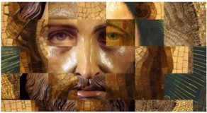

So what most likely really happened two thousand years ago? There are numerous stories about Jesus, some more credible than others. Those events which more likely occurred must be carefully sifted out from the miraculous mythology invented by his followers inspired by the “Holy Spirit.” The sources within 100 years of Jesus’ death from which all the information we have on Jesus are as follows:
The non-Christian documentation of Jesus’ life is very slim: only two short Roman references:
Pliny the Younger (112 CE) - Ltr #10 to Trajan: “Christians are a pestiferous group who worship Jesus as a god; how should I deal with them?”
Tacitus Annals (115 CE) - “The burning of Rome in 64 CE is blamed on Christians, who are the hatred of the human race, followers of Jesus, who was crucified by Pilate.”
and one contemporary Jewish source:
Philo (20 BCE-50 CE) - never mentions Jesus.
Flavius Josephus (37-100 CE) mentions Jesus, with possible emendation by later Christian scribes - 18:3:3 “Jesus a doer of wonders, the Messiah, rose from the dead.”
In Scripture, Jesus is mentioned in Paul, Acts, non-canonical sources, and the Gospels:
Paul, who never met Jesus and seems not to have been familiar with his teachings, appears to know only the following about Jesus: he was born of a woman (Gal 4:4), Jewish (Gal 4:4), had brothers (1 Cor 9:5), one of whom was named James (Gal 1), ministered principally to Jews (Rom 15:8), was betrayed (1 Cor 11), held the Last Supper (1Cor 11), and was crucified. Of Jesus’ teachings Paul records only that Christians should not get divorced and ought to pay preachers, but Paul never cites Jesus’ teachings in defense of doctrine.
Acts mentions him only in 1:1-8, where Jesus appears, commands the apostles to stay in Jerusalem, evades a question on restoring the kingdom of Israel, then disappears into a cloud.
Non-canonical Scriptural sources of stories about Jesus abound, such as the Gospels of Thomas, Peter, and numerous others. These are useful, however, only in reflecting what the early Christian community might have thought about Jesus. They have little authenticity regarding Jesus’ actual life. So we must rely largely upon the Gospels and try to distinguish the Historical Jesus from the Mythological Jesus. Unfortunately, the canonical books of the New Testament have been tampered with, from the addition of nine verses to the gospel of Mark, to John’s manipulation of the day of crucifixion to coincide with the killing of the lambs, to the doctored text forced on Erasmus to document the teaching of the Trinity, to fraudulent Epistles of Paul and the Deutero-Pauline Epistles, to the “gospels” of Peter, Thomas, Judas, Mary, and a legion of others. Though the motivations of these forgeries and creative manipulations of fact were most probably pious, they only cloud the facts of the life of Jesus.
~~~~~~~